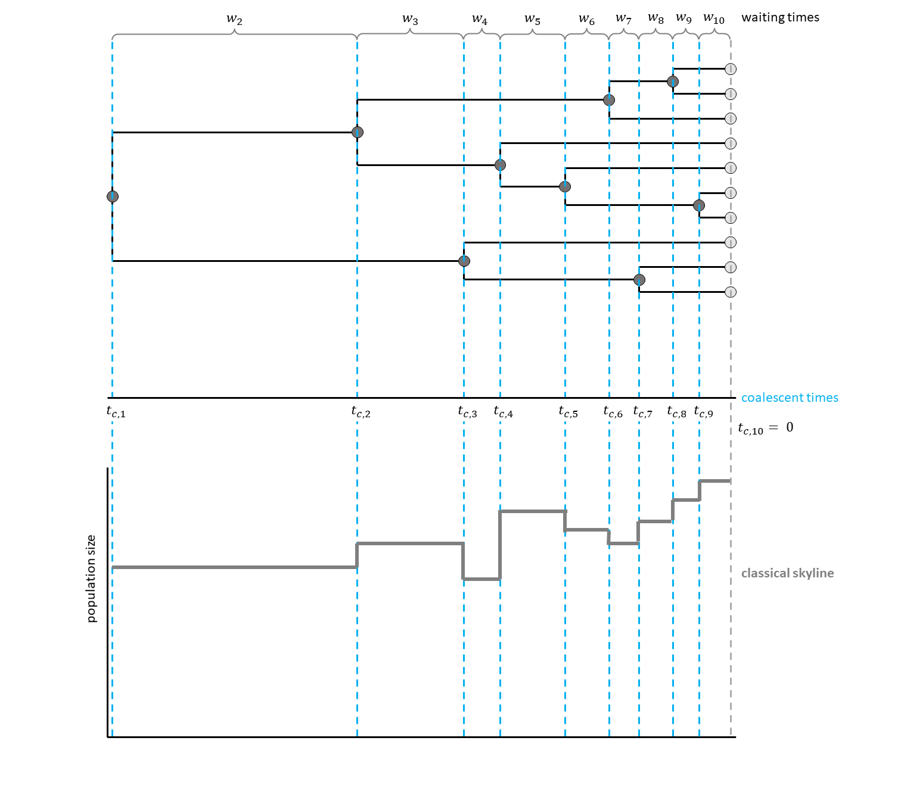
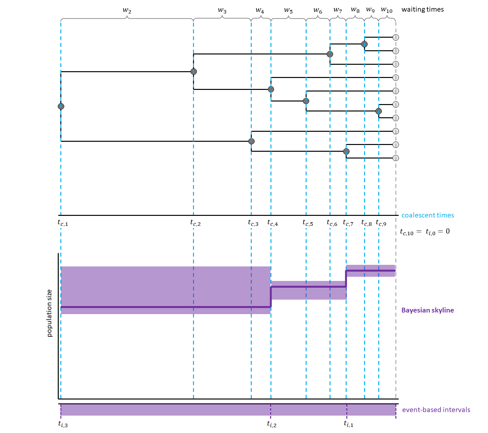
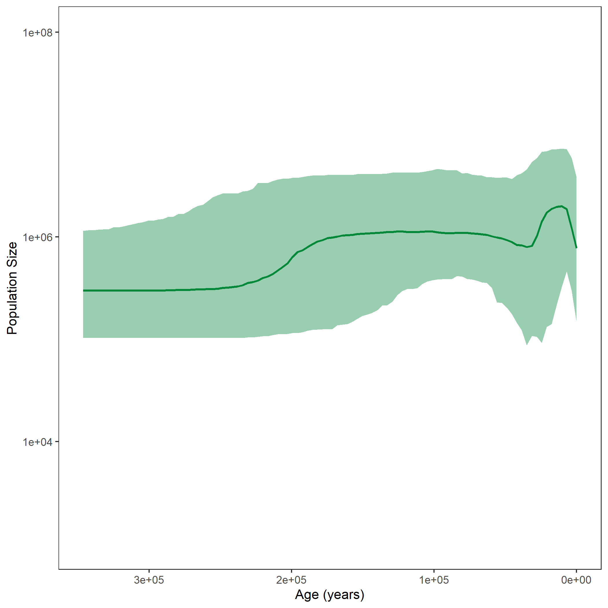

Skyline Plots are models for how population size changes through time.
The classical skyline plot (Pybus et al. 2000) provided the first implementation of this idea.
For each interval between two coalescent events, an effective population size was calculated.
This led to a plot looking very similar to a skyline, thus giving the method its name (see for a hypothetical example).
The generalized skyline plot (Strimmer and Pybus 2001) aimed at reducing the noise from analyzing every single interval by grouping several coalescent events into one interval.
This created a smoother curve.
First, these models were used for maximum likelihood (ML) estimation of population sizes through time.
By now, several extensions allowing for Bayesian estimation have been published (see for example Drummond et al. (2005), Heled and Drummond (2008), Gill et al. (2012)).
In RevBayes, a Skyline plot method is implemented with constant population size intervals.
In other software, you can also find the possibility to have linear skyline intervals.
Even though this is not implemented explicitly as skyline in RevBayes, you can also piece together linear intervals (have a look at the piecewise model exercise, if you are interested in this).
The length of the skyline intervals can either be defined by a specific number of intervals ending at coalescent events, or alternatively be chosen individually without depending on the coalescent events.
In this exercise, each interval will group five coalescent events.
Have a look at , for a hypothetical example with three events per interval.


Likelihood Calculation
We assume that the phylogeny of the samples is known. There are $n$ samples, with $k$ active lineages at the current point in time $t$. Time starts at $t = 0$. The waiting times between coalescent events $w_k$ are exponentially distributed with rate $c = \frac{k (k-1)}{2N_e(t)}$ with $N_e$ being the population size.
The likelihood for a given piecewise-constant population size trajectory is computed as the product of the probability density functions of the coalescent waiting times, which are calculated as follows:
\[p(w_k | t_k) = \frac{k (k -1)}{2N_e(t_k + w_k)} exp \left[ \int_{t_k}^{t_k+w_k} \frac{k (k -1)}{2N_e(t)} dt \right]\]Each $t_k$ is the beginning of the respective kth coalescent interval. The waiting times $w_k$ refer to the waiting time starting when there are $k$ active lineages.
For your info
The entire process of the skyline estimation can be executed by using the mcmc_homochronous_skyline.Rev script that you can download on the left side of the page. Save it in your scripts directory. You can type the following command into
RevBayes:source("scripts/mcmc_homochronous_skyline.Rev")We will walk you through the script in the following section.
We will mainly highlight the parts of the script that change compared to the constant coalescent model.
Read in the data as described in the first exercise.
For the skyline model, you need to decide on the number of intervals. In order to get five coalescent events per interval, we divide the number of coalescent events by five. With $n$ taxa, we expect $(n-1)$ coalescent events, until there is only one lineage left.
NUM_INTERVALS = ceil((n_taxa - 1) / 5)
For each interval, a population size will be estimated. Choose a prior and add a move for each population size.
for (i in 1:NUM_INTERVALS) {
pop_size[i] ~ dnUniform(0,1E6)
pop_size[i].setValue(100)
moves.append( mvScale(pop_size[i], lambda=0.1, tune=true, weight=2.0) )
}
Now, we will instantiate the stochastic node for the tree.
The Skyline version of the Coalescent distribution function dnCoalescentSkyline takes the vector of population sizes the taxa as input.
By chosing methods="events", the interval lengths will be chosen based on the number of events.
psi ~ dnCoalescentSkyline(theta=pop_size, method="events", taxa=taxa)
For later plotting and analyzing the population size curve, we need to retrieve the resulting interval times.
interval_times := psi.getIntervalAges()
For this analysis, we constrain the root age as before and add the same moves for the tree.
This part is also taken from the constant coalescent exercise.
Finally, we need to wrap our model as before. We add the monitors and then run the MCMC. Here, another monitor is added for the interval times.
monitors.append( mnModel(filename="output/example_skyline.log",printgen=THINNING) )
monitors.append( mnFile(filename="output/example_skyline.trees",psi,printgen=THINNING) )
monitors.append( mnFile(filename="output/example_skyline_NEs.log",pop_size,printgen=THINNING) )
monitors.append( mnFile(filename="output/example_skyline_times.log",interval_times,printgen=THINNING) )
monitors.append( mnScreen(pop_size, root_age, printgen=100) )
After running your analysis, you can plot the results again using the R package RevGadgets.
library(RevGadgets)
burnin = 0.1
probs = c(0.025, 0.975)
summary = "median"
population_size_log = "output/horses_skyline_NEs.log"
interval_change_points_log = "output/horses_skyline_times.log"
df <- processPopSizes(population_size_log, interval_change_points_log, method = "events", burnin = burnin, probs = probs, summary = summary)
p <- plotPopSizes(df) + ggplot2::coord_cartesian(ylim = c(1e3, 1e8))
ggplot2::ggsave("horses_skyline.png", p)

When you are done, have a look at the next exercise.